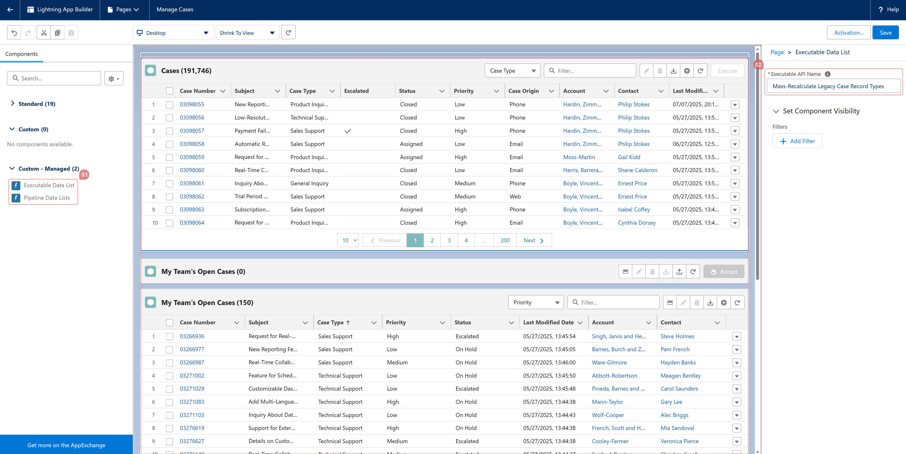

To incorporate Data Lists into the Lightning UI, simply add the "Executable Data List", "Pipeline Data Lists", or "Pipeline Data List Quick Links" LWC component to a Lightning Record Page, Lightning App Builder, or Lightning Home Page. Then, specify the API Name of the Executable or Pipeline you wish to use. For a dynamic Data List rendered in the context of a specific record, input a temporarily representative record ID into the "Context Record ID" field and use related fields in the filters while constructing the SOQL query. This allows you to utilize related fields (up to 5 parent levels) for filtering. When the component is displayed on a Lightning Record Page, the "Context Record ID" will automatically adapt to the ID of the record being loaded.
